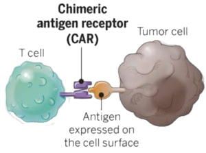
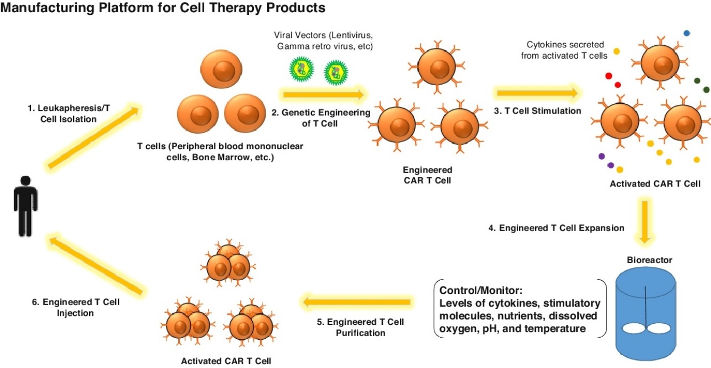

The human body is constantly being bombarded by different microbes, viruses, and pathogens. Luckily, humans have a complex immune system that actively works to defend their health. The immune system is composed of coordinated defences that specifically eliminate entities that are recognized as non-self and potentially dangerous. When recognized, an immune response is initiated; however, sometimes diseases are capable of evading detection by immune cells. These diseases, such as cancer, can be notoriously difficult to treat. Could there be a better way? Medical research has a new proposal: chimeric antigen receptor (CAR) T cell therapy. This therapy uses genetic alteration to confer an advantage to your immune cells against cancer, without the need for toxic chemicals or invasive surgeries.
 Figure 1. Chimeric Antigen Receptor (CAR) protein expressed on cell surface
CAR T cells enhance the body’s natural immune response by assisting immune cells with threat recognition. Humans have a variety of cells that can respond to pathogens or non-functioning cells, but this therapy focuses specifically on the T lymphocyte—a type of white blood cell that can directly kill infected or damaged cells [7]. To be recognized for destruction, the damaged cells first produce pieces of small proteins known as antigens. These antigens are bound to specialized receptors, called MHC molecules, which are presented on the surface of the damaged cell [7],[8]. When circulating, T cells recognize the antigens and use their surface receptors (TCRs) to bind to the MHC molecules [7],[9]. This interaction activates the T cell, which causes the release of toxic enzymes onto the damaged cell. The enzymes cause the damaged cell to be destroyed by apoptosis—a controlled version of cell death [9]. Cancerous cells have the ability to evade immune detection by reducing their expression of MHC molecules [2],[7]. The circulating T cells require MHC molecules to bind and destroy cells. Without being recognized by the immune system, nothing stops cancerous cells from continuing to grow.
To enhance the natural immune response, T cells need assistance with recognizing cancerous cells that have reduced their expression of MHC molecules. CAR T cell immunotherapy uses a patient’s own T cells and modifies them to express new receptors, called CARs, on their cell surfaces. A CAR protein does not depend on the presence of MHC molecule and can be engineered to recognize antigens on cancerous cells [4],[9]. T cells that have been modified to express the CAR protein can detect cancer cells that were previously "hidden" from the immune system. CAR T cells are therefore better able to bind to cancer cells and target them for destruction.
 Figure 2. Process of extracting and manufacturing CAR T cells to be infused back into a patient
T cells can be modified in two different ways to express CARs on their surface. One approach is to use CAR mRNA, the genetic instructions to make proteins, and insert them into a patient’s T cells [4]. The mRNA is a single-stranded product, similar to DNA, which serves as a template so the T cell can produce CAR proteins. Once completed, the CAR proteins get sorted to the T cell’s surface. Howevr, after time these mRNA instructions are depleted in the cell and the CARs will no longer be expressed.[2],[4]. For long-lasting effects, the instructions for building CAR proteins need to become embedded in the cell’s DNA. By directly altering the cell’s DNA, mRNA will be produced and translated continuously; the cell permanently gains the ability to produce CARs [4]. Furthermore, the cell can pass the CAR gene onto its offspring. CAR T cells are multiplied outside the body to produce an army of cells that are infused back into the patient, where they’ll go on to target cancer cells for destruction [2].
There has been extensive research on CAR T cells, but not all results have been positive. Different types of cancer cells produce different kinds of antigens, and therefore require different kinds of CARs. The largest difficulty surrounding this type of therapy is in developing CARs to match the vast variety of different cancerous cells [6]. CAR T cell immunotherapy has been highly effective for treating B cell acute lymphoblastic leukemia—a common cancer in children. One study even observed complete remission in 27/30 relapsed patients [1]. That level of success is impressive; however, progress with solid tumour cancers has been significantly less. Solid tumours pose a physical barrier due to their structural formation—the tightly packed cells make it difficult for CAR T cells to locate and bind to specific cancer cells [3],[8]. The dense cellular structure of solid tumours creates areas that are deprived of oxygen and nutrients, further limiting the action of CAR T cells [3]. However, if these barriers could be surpassed, CAR T cell immunotherapy could have uses far beyond just cancer treatment. Since CARs respond to a variety of antigens on cell surfaces, they could be adapted to respond to a range of damaged cells. In this manner, the therapy could be used to treat infections, or even autoimmune diseases—conditions that cause the body to mistakenly attack itself [2].
CAR T cell immunotherapy reduces the need for toxic chemicals in cancer treatment. Although it creates a more natural immune response through the use of a patient’s own cells, all treatments come with risks, and CAR T cell immunotherapy has some serious side effects to consider. CAR T cells can be harmful if the antigens that they’ve been engineered to recognize are not expressed exclusively on damaged or malfunctioning cells [6]. For example, in the treatment of B cell leukemia, CARs target an antigen called CD19. Unfortunately, CD19 can be expressed on both cancerous and healthy B cells. If the therapy is not well-localized to a cancerous area, the CARs will also target healthy B cells for destruction [2]. Another risk is the overstimulation of T cells. Once activated, T cells release small signalling molecules called cytokines, which can trigger fever, swelling, and low blood pressure [2],[3]. Severe cytokine overproduction can be lethal to patients. The final concern with CAR T cell immunotherapy is its efficiency. The process of extracting, altering, and reintroducing these specialized cells is time-consuming and expensive, and must be better optimized before moving forward with this therapeutic approach [3],[4],[8]. Despite these issues, scientists are working diligently to make this therapy a practical option.
Curing cancer is a tricky concept; it’s difficult to find an end-all solution to the various forms of this disease. CAR T cells are an exciting new option that may provide a less-toxic alternative to traditional chemotherapy, but only further investigation will show the true implications of this research.